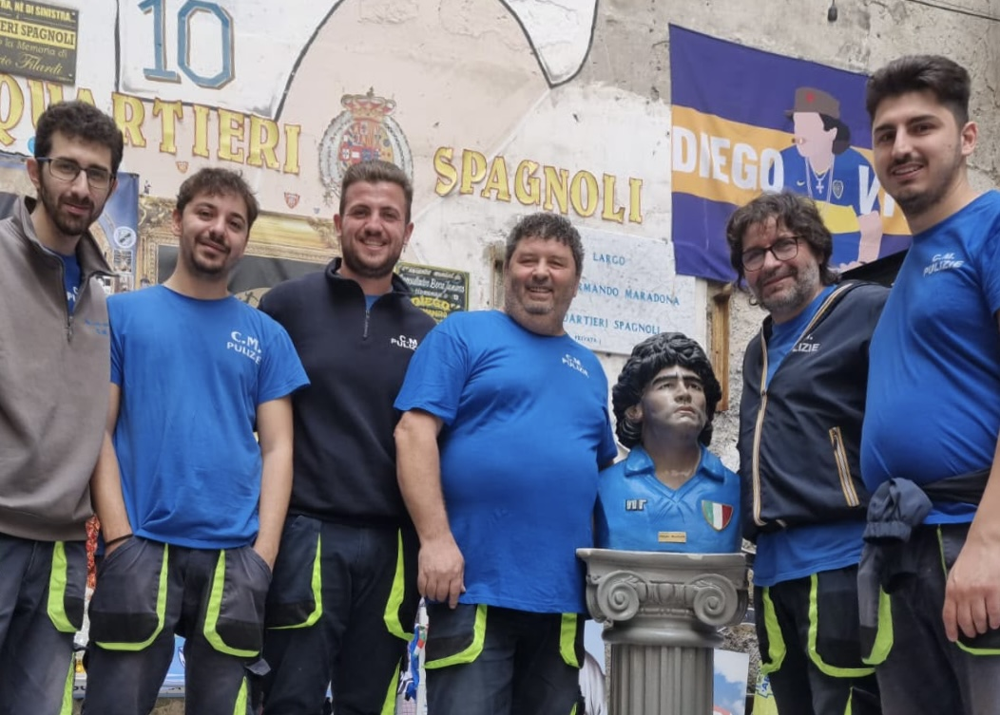
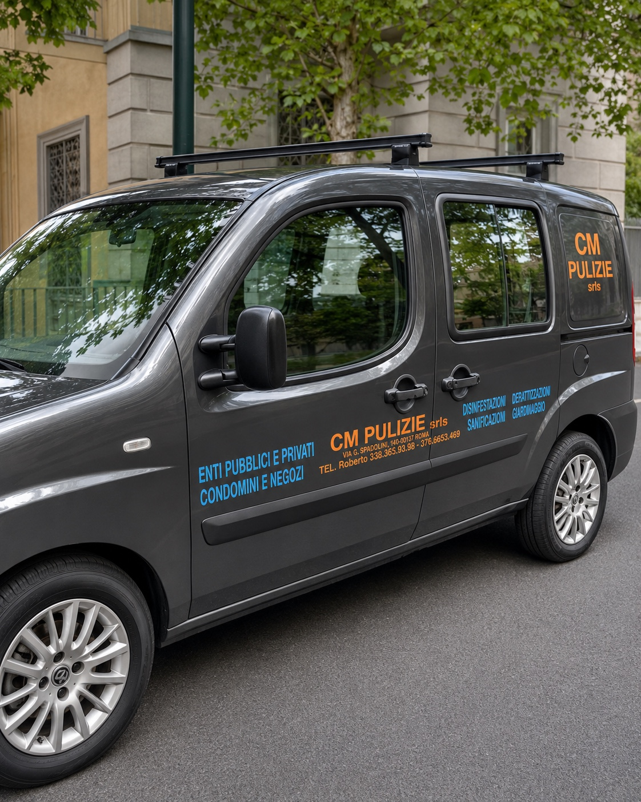
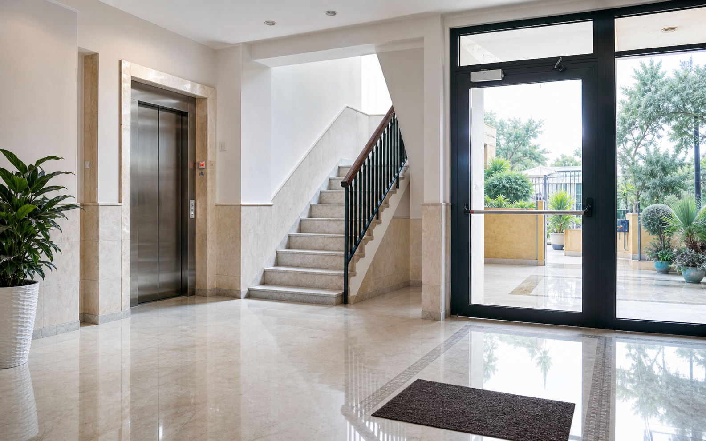

Ascolto e sopralluogo
Raccogliamo le informazioni utili per capire spazi, frequenza, accessi e priorità.
Una squadra vera, presente ogni giorno sul territorio, con esperienza, cura e passione per il lavoro fatto bene.

Siamo una squadra prima ancora che un’impresa. Ogni intervento nasce dall’impegno di persone che credono nel lavoro fatto bene, nella puntualità e nella fiducia con il cliente. Per noi pulire non significa solo rendere bello un ambiente, ma prendersene cura.
Ogni cliente viene seguito con attenzione, dalla prima richiesta fino all'intervento finale, con soluzioni concrete e comunicazione chiara.
Richiedi un preventivo
Ogni scala, ufficio, abitazione o area comune racconta una responsabilità diversa. Il nostro lavoro è lasciare ordine, sicurezza e fiducia, giorno dopo giorno.
Dietro ogni intervento c'è un modo di lavorare preciso: ascolto delle esigenze, pianificazione, attenzione agli spazi e verifica finale del risultato.
Non lavoriamo in modo improvvisato: ogni ambiente viene osservato, organizzato e seguito con un criterio semplice ma concreto. L'obiettivo è lasciare al cliente un servizio ordinato, riconoscibile e affidabile nel tempo.
Raccogliamo le informazioni utili per capire spazi, frequenza, accessi e priorità.
Organizziamo persone, prodotti e attrezzature in base al tipo di intervento richiesto.
Verifichiamo i dettagli visibili: scale, ingressi, superfici, vetri e aree comuni.

Ogni lavoro viene svolto con attenzione, metodo e serietà.
Entriamo negli spazi dei clienti con rispetto e responsabilità.
Anche le piccole cose fanno la differenza in un ambiente pulito.
Operiamo a Napoli, principalmente al Vomero e in tutta la città.
Raccontaci il tipo di ambiente da trattare: ti guideremo verso la soluzione più adatta.